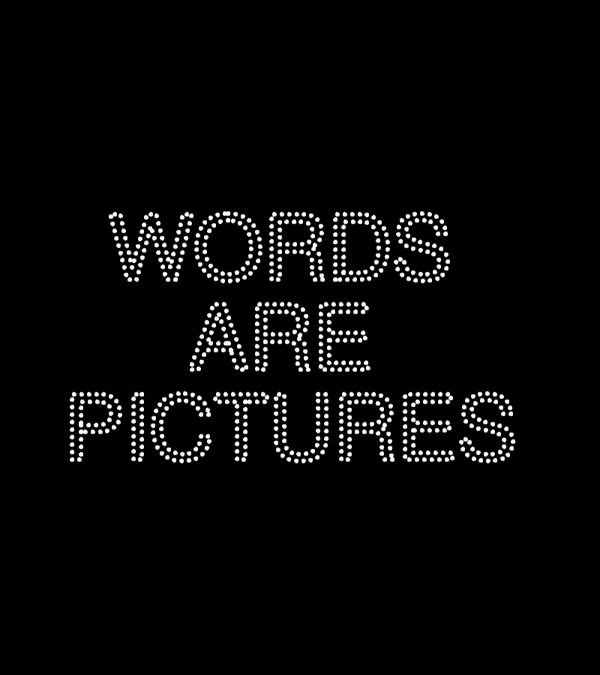
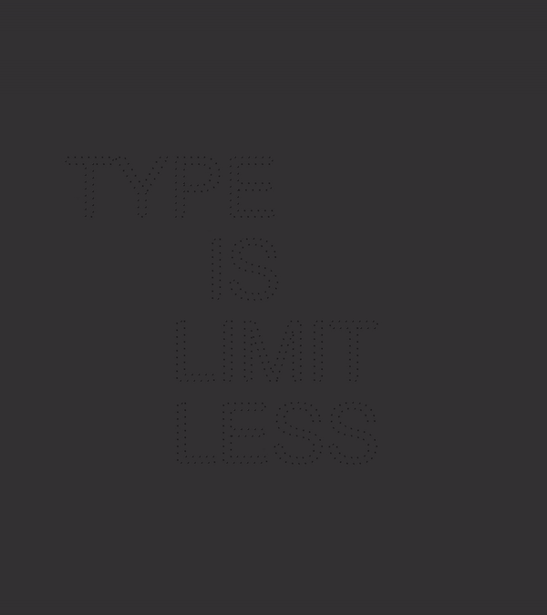
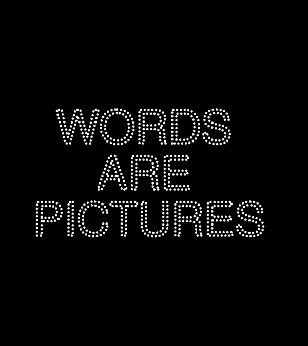
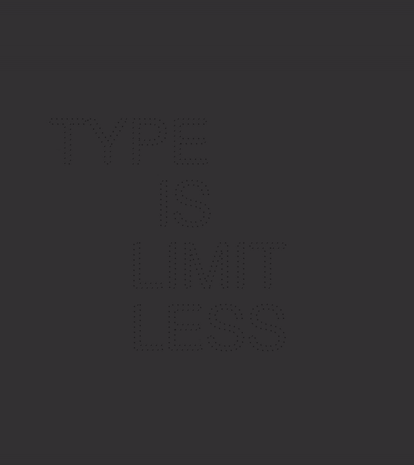

CAN YOU READ THIS? Is a set of interactive type "digital posters"/experiments created in Processing using quoted phrases from British type designer Craig Ward. Shown below are simulations of interactions in which the animation of the type is dependent on user-controlled mouse actions.
 



The works of Craig Ward are an embodiment of a delicate balance between controlling the process and letting the process takeover. In experimenting with the tension between organic and inorganic, he exemplifies the delicate balance of our ecosystem. It is reflective of the relationship we, as humans, have with our surrounding natural environment and it is perhaps this hidden connection that evokes the emotional qualities found in his typography that we so strongly respond to.
Word are pictures / pictures tell stories. The visual products of this project ultimately tell the story of my learning process as I internalized Craig Ward's artistic spirit.
Word are pictures / pictures tell stories. The visual products of this project ultimately tell the story of my learning process as I internalized Craig Ward's artistic spirit.